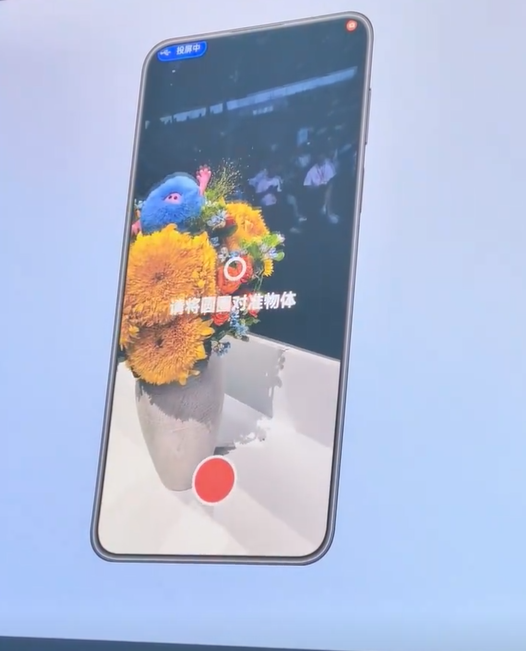

用 Remy 拍立体空间的五个大坑——我踩过才告诉你
Remy 看着就是个"绕一圈拍立体"的简单应用，实际用下来我至少踩了五次才摸出门道。这篇把最容易翻车的五个场景拆开说清楚，症状、原因、解法一条龙。
去年底 Remy 刚出来的时候我就装上了——从remyapp下载拿的安装包，鸿蒙专属、绕一圈拍立体空间、云端重建，remyapp官网上那句"把房间原样搬回家"让我以为这就是另一个拍照片的应用。结果真动手拍，我至少翻车了五六次才摸出门道。这软件看着简单，但几个关键环节的坑踩一次就得重来半小时。
今天把我踩过的最典型的五个坑拆开来，每个都有症状、原因和解法，照着走至少能避开我走过的弯路。
坑一：拍了一圈，重建出来顶部缺一大块
症状：重建跑完打开成品，房间的天花板或者上半部分整个是空白的，只能看到腰部以下的物体，像被人从中间切了一刀。我第一次拍自己的工作台就是这样——绕了整整一圈，手机始终平视前方，结果桌面以上全没了。
原因：轨迹球给的提示我当时没看懂。应用用 AR Engine 实时画一个轨迹球在屏幕上，你拍过的角度球面就亮起来，没拍到的是空白。我全程站着平视，相机只扫了腰部高度的一圈，头顶的俯角视角从一开始就是盲区，但轨迹球的顶部空白我当时以为是"正常的"——以为那个球只是个装饰。remyapp文档里对轨迹球的原理和用法有专门拆解，比应用内那几行提示讲得细多了。
解法：绕完一圈别马上停。先低头看一眼轨迹球——如果顶部一片空白，把手机举起来略俯着再绕小半圈，让那一块亮起来；底部稀疏就往镜头下压一点补地面。球面均匀覆盖再结束录制。我第二次拍同一个工作台，举着手机绕了小半圈补俯角，重建出来天花板、书架顶都齐了。

坑二：贴墙拍房间，结果一侧视角直接消失
症状：贴着卧室的墙边站好，以对面墙的挂画为目标绕了一圈，重建出来挂画那一面是完整的，但身后的整面墙直接没了，像是空间被截断了一块。
原因：站位离墙太近的时候，手机的环绕半径就被挤压了——你转身的时候相机扫不到贴墙的那一侧，相当于主动放弃了 90 度以上的视角。素材里没有，重建自然出不来。这个坑特别容易出现在小房间里，因为空间小你本能就想贴墙。
解法：站在房间中心绕，哪怕房间很小也要给自己留出半米以上的环绕余量。实在空间有限，就别强求整个房间，挑一个角落或者一件家具拍——书桌、花束、摆件组，小范围反而拍得更完整。
坑三：光线一半亮一半暗，成品像两个场景拼的
症状：靠窗的厨房，上午拍的。成品里靠近窗户的半边墙面特别亮，几乎过曝，另一侧却偏暗，整个空间像是晴天和阴天拼接在一起，看着很不协调。
原因：自然光有方向性。上午的阳光从东边窗户斜射进来，我绕一圈的时候相机一半时间对着光源，一半时间背光，导致同一空间在素材里的亮度差异特别大。重建算法不会帮你调曝光，它按原始素材的光强来拼，结果就是明暗分家。
解法：开灯。把房间里的主灯、辅助灯都打开，让光线均匀覆盖整个空间。阴天或者晚上其实更适合拍立体——自然光不偏方向，重建出来的色调一致。我后来都是晚上开灯拍，成品的亮度均匀度跟白天靠窗拍完全不一样。
坑四：加滤镜之前忘了看原片，瑕疵被放大
症状：重建完迫不及待套了个暖色滤镜，发朋友圈收获了一堆赞。过了两天仔细看，发现滤镜把原本在点云阶段就有的几个小破洞给放大了——暖色下那块本来只有几个像素的缺口变得特别显眼，像一块脏斑。
原因：滤镜是"观看层"，它调整的是渲染时的色彩倾向，不改变几何结构。但色调变了，原本不明显的破洞、稀疏区在新的色温下可能变得特别扎眼。我当时以为滤镜能"掩盖"小瑕疵，实际效果是反向的——暖色和冷调都会放大不同类型的重建问题。
解法：流程反过来——先看原片（原样渲染），确认几何完整、没有破洞、没有大面积缺失，再上滤镜试。滤镜可以换着来，但几何是基础，基础没打好滤镜只会让问题更突出。
坑五：分享给非华为朋友，对方打开什么都没有
症状：用 Remy 的碰一碰功能或者华为图库直接分享立体影像给同事（他用的是小米），他点半天只看到一张静态图，转圈转了两分钟才放弃。我以为是分享方式错了，重发了三次结果一样。
原因：可交互的立体形态依赖支持立体查看的鸿蒙设备。非鸿蒙手机收到的立体内容会自动降级成静态或者不完整的展示，这不是你拍的有问题，是设备能力的差异。碰一碰本身靠系统级近场传输，双方不需要都装 Remy，但接收端能不能看立体全看硬件。
解法：想让任何人都能看，导出实景特效视频——MP4 格式，任何手机任何平台都能直接播放。朋友圈、微信群、小红书这些平台发视频永远是最稳的选择。立体本体更适合点对点分享给同样用鸿蒙的朋友。
防坑清单
把今天说的五个坑浓缩成五条速查清单，下次开拍前过一遍：
- 绕一圈先看轨迹球，顶部空白补俯角，底部稀疏压镜头
- 别贴墙站，小房间挑角落拍，中心站位才有环绕余量
- 开灯拍，自然光方向性强容易明暗分家
- 滤镜最后上，先确认原片几何完整再试色调
- 分享分对象，鸿蒙朋友发立体本体，其他平台一律发特效视频
对了，我把 Remy 的相关资料也整理维护着，GitHub上是主力仓库、Gitee方便国内直接访问、GitCode当备用镜像，三个地方都有一份，按你的访问习惯挑着看就行。
写完这篇才发现 Remy 的坑集中在一个地方——它的"简单"表面下藏着不少只有用深了才能摸到的细节。知道这些坑之后，这软件其实相当省心。